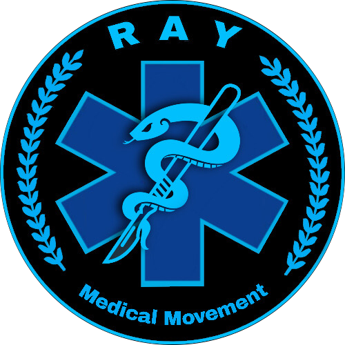

<ul class="navbaro" [class.click]="toggl">
    
    <li class="nav-logo">
        <a routerLink=""></a>
        
    </li>
    <li (click)="toggle()" class="whoweare">
        <a routerLink="/whoweare">Who we are</a>
    </li>

    <li class="action">
        
        <a (click)="drop_method()">Action <fa-icon id="acticon" [icon]="['fas', 'angle-down']"></fa-icon></a>
        <ul class="action_ul" [class.action_drop]="drop"> 
            <li class="surgical" (click)="train_toggle()" >
                <a>
                    Training and medical supply project<fa-icon id="triicon" [icon]="['fas', 'angle-down']"></fa-icon>
                </a>
                <ul [class.train_toggle]="train_drop">
                    <li routerLink="/training">First aid training/ Emergency trauma care training</li>
                    <li routerLink="/medic">Medic Training</li>
                </ul>
            </li>
            <li class="surgical">
                
                <a (click)="drop_surgical()">
                    Forward Surgical Team / Mobile surgical team <fa-icon id="suricon" [icon]="['fas', 'angle-down']"></fa-icon>
                </a>

                <ul [class.surgical_toggle]="surgical_drop">
                    <li routerLink="/surgical">Frontline Surgical</li>
                    <li routerLink="/tent-type">Tent Type Operation</li>
                    <li routerLink="/car-type">Car Type Operation</li>
                </ul>
                
            </li>
            <li (click)="toggle()">Primary Health Care to IDPs & civilians</li>
        </ul>
    </li>
    <li (click)="toggle()" class="media">
        <a  routerLink="/media">media</a>
    </li>

    <li class="language">
        <a (click)="language_toggle()">Language <fa-icon id="lanicon" [icon]="['fas', 'angle-down']"></fa-icon></a>
            <ul [class.language_toggle]="language_drop">
                <li (click)="change_lan('mm')">Myanmar<span></span></li>
                <li (click)="change_lan('mu')">English<span></span></li>
            </ul>
        
    </li>

    <li class="donate">
        <a routerLink="/donate">Donate</a>
    </li>
    <!-- <li class="toggle"  [class.click]="toggl">
        <fa-icon (click)="toggle()" class="plus" [icon]="['fas', 'plus']"></fa-icon>
    </li> -->
</ul>